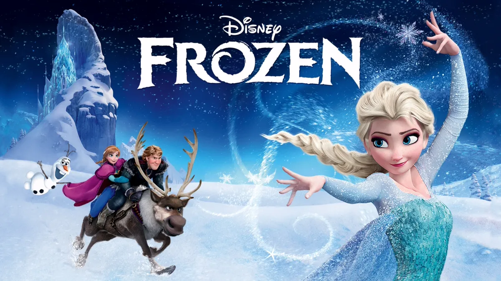

Carag (Emile Chérif) is a teenager who has special abilities; he can transform into an animal or known as shapeshifters. And as it turns out, he's not the only one who has that particular ability.
He eventually joined Clearwater High School, a special school for special children who had the same abilities as him. There he was mentored by Andrew Milling, someone who also had the same abilities as him. He then learned of the rebel forces of the shapeshifters who tried to fight humans. Not alone, Carag fights him along with Holly (Lilly Falk) who can transform into red squirrels and Brandon (Jonathan von Ehrlich) with the ability to turn into a bison.
Adapted from a popular teen novel, director Damian John Harper presents an exciting world. Including beautiful natural scenery and pampering the eyes. The visual effects that display the change in human shape to animals are also quite impressive. Woodwalkers have similar themes to Animorph, including how the character can turn into animals. But, although the premise of this film is very interesting, the characters in the film do not seem to be fully able to bring their characters to life.A slightly stiff act makes some supposed emotional moments actually feel flat. The chemistry between Carag, Holly, and Brandon is also less noticeable, so their relationship looks not as strong as it depicts in his novel.
16 Important Characters Woodwalkers Starring Emile Cherif, Popular Novel Adaptation By Katja Brandis
Carag the Main Character (Emile Chérif)
Jeffrey (Emil Bloch)
Andrew Milling (Oliver Masucci)
Holly (Lili Falk)
Brandon (Johan von Ehrlich)
Although the film is still new, but already six versions of the novel have been released. So don’t be surprised if this first film summarizes the first and second book, followed by a sequel with stories from the third and fourth books, as well as the last two books as the cover of this trilogy. But for those of you who read the novel, you should probably reduce expectations when watching this film. There are several events that are cut, considering the film is a combination of two books. There are still many questions hanging at the end of the movie. Including the post credit scene referring to the second film. It is likely that the sequel will be released in 2025, while the final section is prepared in 2026. For the die-hard fans of his novel, the Woodwalkers movie may feel less in line with expectations. But if you want to find a light fantasy spectacle with charming visuals, this film can be a consideration. So, are you ready to explore the world of Woodwalkers?
Trailer TVD
Day 2: Frozen
Frozen (bahasa Indonesia: Beku) adalah film fantasi musikal animasi komputer 3D Amerika 2013 yang diproduksi oleh Walt Disney Animation Studios dan dirilis oleh Walt Disney Pictures. Film fitur animasi Disney ke-53, terinspirasi oleh dongeng Hans Christian Andersen "The Snow Queen".[5] Ini bercerita tentang seorang putri yang tak kenal takut bernama Anna yang melakukan perjalanan bersama tukang es yang kasar, rusa yang setia, dan manusia salju yang naif untuk menemukan saudara perempuannya Elsa yang terasing, yang kekuatan esnya secara tidak sengaja telah menjebak kerajaan mereka di musim dingin yang abadi.
Sinopsis
Frozen menjalani beberapa perawatan cerita sebelum ditugaskan pada tahun 2011, dengan skenario yang ditulis oleh Jennifer Lee, yang juga disutradarai bersama dengan Chris Buck. Film ini menampilkan suara-suara Kristen Bell, Idina Menzel, Jonathan Groff, Josh Gad, dan Santino Fontana. Christophe Beck dipekerjakan untuk menyusun skor orkestra film, sementara Robert Lopez dan Kristen Anderson-Lopez menulis lagu-lagunya.
Frozen perdana di Teater El Capitan di Hollywood, California, pada 19 November 2013, memiliki perilisan terbatas pada 22 November dan masuk ke perilisan teater umum pada 27 November. Ini disambut dengan pujian untuk visual, skenario, tema , musik, dan akting suara; beberapa kritikus film menganggap Frozen sebagai film fitur animasi Disney terbaik sejak era kebangkitan studio.
Frozen memenangkan dua Academy Awards untuk Best Animated Feature dan Best Original Song ("Let It Go"), Penghargaan Golden Globe Award for Best Animated Feature Film, Penghargaan BAFTA Award for Best Animated Film,[8] lima Annie Awards (termasuk Best Animated Feature), dua Grammy Awards untuk Best Compilation Soundtrack for Visual Media dan Best Song Written for Visual Media ("Let It Go"), dan dua Penghargaan Film dua Critics' Choice Movie Awards dan Best Original Song ("Let It Go"). Sekuel pendek beranimasi, Frozen Fever, tayang perdana pada 13 Maret 2015.[10] sebuah fitur animasi berjudul Olaf's Frozen Adventure, tayang perdana pada 22 November 2017, dan sekuel panjang fitur, Frozen 2, dirilis pada 22 November 2019.
Frozen menjadi film animasi terlaris sepanjang masa hingga dikalahkan oleh versi remake dari The Lion King pada tahun 2019.

Frozen
Frozen bercerita tentang dua saudari, Elsa dan Anna, yang merupakan putri kerajaan Arendelle. Elsa memiliki kekuatan magis untuk mengendalikan es dan salju, tetapi karena ketakutan akan kemampuannya, ia mengasingkan diri. Saat Elsa tanpa sengaja membekukan seluruh kerajaan dalam musim dingin abadi, Anna bertekad untuk menemukannya dan mengakhiri kutukan tersebut. Dalam perjalanannya, Anna ditemani oleh Kristoff, seorang pemuda pengantar es, rusa peliharaannya Sven, dan manusia salju lucu bernama Olaf. Film ini mengangkat tema cinta, keberanian, dan ikatan persaudaraan, dengan lagu ikonik Let It Go yang menjadi salah satu daya tarik utamanya.
Pada 12 Maret 2015, Disney secara resmi mengumumkan bahwa sekuel fitur panjang untuk Frozen sedang dalam pengembangan dengan Buck dan Lee kembali sebagai direktur, dan Del Vecho kembali sebagai produser.Dalam sebuah wawancara pada bulan Mei 2015, Buck mengatakan, "Kami memiliki banyak hal untuk dipecahkan tetapi setidaknya kami tahu ke mana kami akan pergi."Pada Maret 2016, Bell menyatakan bahwa rekaman suara untuk film ini akan dimulai nanti di bulan,tetapi pada bulan September tahun yang sama, ia menarik kembali komentar sebelumnya sebagai salah dan menjelaskan bahwa ia telah bekerja sebagai gantinya pada proyek-proyek beku lainnya seperti spesial liburan mendatang. Pada bulan April 2017, Disney mengumumkan bahwa Frozen 2 akan dirilis pada 27 November 2019. Pada Juli 2018, Evan Rachel Wood dan Sterling K. Brown diungkapkan dalam pembicaraan untuk bergabung dengan Frozen 2, sementara itu dikonfirmasi bahwa Bell, Menzel, dan Gad akan mengulangi peran mereka dalam sekuel tersebut. Pada awal 2018, diskusi dari dalam Disney Studios dipublikasikan yang berpusat pada kemungkinan perkembangan Elsa sebagai lesbian di Frozen 2. Pada musim gugur 2018, diumumkan bahwa tanggal perilisan dipindahkan ke 22 November 2019.
Terdapat beberapa karakter pemain dalam FROZEN seperti :
I Idina Menzel sebagai Elsa
Elsa adalah ratu Arendelle yang memiliki kekuatan magis untuk mengendalikan es dan salju. Karena takut menyakiti orang lain, terutama adiknya, ia mengisolasi diri. Namun, seiring berjalannya cerita, Elsa belajar menerima dan mengendalikan kekuatannya dengan percaya diri.
Kristen Bell sebagai Anna
Anna adalah adik Elsa yang ceria, penuh semangat, dan pemberani. Ia tidak memiliki kekuatan seperti Elsa, tetapi ia menunjukkan bahwa cinta dan tekad bisa mengatasi berbagai rintangan. Anna berusaha mendekati Elsa dan menyelamatkan Arendelle dari musim dingin abadi.
Josh Gad sebagai Olaf
Olaf adalah manusia salju ajaib yang dibuat oleh Elsa saat kecil. Ia lucu, polos, dan memiliki impian unik untuk merasakan musim panas, meskipun dirinya terbuat dari salju. Olaf juga menjadi simbol kehangatan dan persahabatan dalam film.
Jonathan Groff sebagai Kristoff
Kristoff adalah seorang pengantar es yang hidup bersama rusa kesayangannya, Sven. Ia awalnya tidak terlalu peduli dengan urusan kerajaan, tetapi kemudian membantu Anna dalam perjalanannya mencari Elsa. Kristoff memiliki sifat baik hati dan akhirnya jatuh cinta pada Anna.
Santino Fontana sebagai Hans
Hans adalah pangeran dari Kepulauan Selatan yang awalnya terlihat ramah dan menawan. Ia berpura-pura mencintai Anna untuk mengambil alih Arendelle, tetapi akhirnya niat jahatnya terungkap. Hans adalah tokoh antagonis utama dalam cerita.
Kelima karakter ini memainkan peran penting dalam cerita Frozen, yang mengangkat tema cinta, keberanian, dan hubungan keluarga.
Trailer frozen
Day 3: Tingker Bell
Tinkerbell adalah seorang tokoh fiksi karya J.M Barrie. Thinkerbell muncul dalam beberapa film dan sebuah adaptasi televisi dari cerita Peter Pan, khususnya gambar animasi Walt Disney tahun 1953. Dia juga muncul dalam lanjutan resmi Peter Pan in Scarlet oleh Geraldine McCaughrean dan ditugaskan oleh Great Ormond Street Hospital serta seri buku Petrus dan Starcatchers oleh Ridley Pearson dan Dave Barry. Awalnya, Tinkerbell hanya merupakan karakter pendukung yang diciptakan sebagai "peri umum". Dia adalah inkarnasi animasi gemilang, kemudian menjadi maskot resmi yang dikenal luas dari The Walt Disney Company dan pusat dari perusahaan franchise Disney Fairies Media, termasuk film seri Tinkerbell. Dalam bentuk animasinya, dia meninggalkan jejak debu pixie bekerlap-kerlip.
Tinkerbell digambarkan oleh Barrie sebagai peri yang mampu memperbaiki panci dan ceret, serta senang bermain-main dengan sesama peri. Dialognya terdiri dari suara denting bel yang hanya dimengerti oleh mereka yang akrab dengan bahasa peri. Pada tahap produksi asli, Tinkerbell muncul di panggung sebagai cahaya melesat, diciptakan sebuah cermin kecil yang memantulkan sedikit lingkaran cahaya lampu yang amat terang. Sementara suaranya diciptakan dari suara lonceng yang khusus dibawa Barrie dari Swiss. Namun, Miss Jane Gelatik yang terdaftar di antara para pemain pada program Tinkerbell berkata, "Ini adalah lelucon yang juga membantu mistik dari karakter peri, serta tertipu oleh Inspektur Pajak yang mengirim permintaan pajak Jane Wren."
Film adaptasi memberikan efek vokal pertama untuk karakter, apakah melalui suara—ekspresi seperti musik atau suara denting lonceng pidato—atau manusia. Dia dimainkan oleh Virginia Browne Faire pada 1924 versi Herbert Brenon tentang Peter Pan, Julia Roberts di Hook 1991, dan oleh Ludivine Sagnier di tahun 2003 adaptasi PJ Hogan. Awalnya direncanakan untuk menggunakan versi komputer yang dihasilkan dari karakter, tetapi Sagnier digunakan dalam kombinasi dengan model digital dan efek untuk mengambil keuntungan dari ekspresi aktris itu. Tinkerbell disuarakan oleh Debi Derryberry di 1990 Fox program animasi Peter Pan, dan Pirates oleh Sumi Shimamoto dalam seri anime 1989 Peter Pan ada Boken. Tinkerbell versi Disney seperti yang digambarkan di media, telah menjadi salah satu ikon perusahaan yang paling penting.
Mae Whitman sebagai Tinker Bell
Tinker Bell adalah peri berbakat yang ahli dalam membuat dan memperbaiki benda-benda. Ia ingin diakui dan sering merasa penasaran tentang dunia di luar Pixie Hollow.
Raven-Symoné sebagai Iridessa
Iridessa adalah peri cahaya yang penuh energi dan selalu berusaha menjaga segalanya tetap teratur. Ia sangat bertanggung jawab dan berhati-hati dalam menggunakan kekuatannya.
Lucy Liu sebagai Silvermist
Silvermist adalah peri air yang lembut dan penuh kasih. Ia sering memberikan nasihat kepada teman-temannya dan memiliki sifat yang santai serta optimis.
Kristin Chenoweth sebagai Rosetta
Rosetta adalah peri taman yang elegan dan menyukai keindahan. Ia sangat menyukai bunga dan sering bersikap seperti kakak yang bijak bagi teman-temannya.
America Ferrera sebagai Fawn
Fawn adalah peri hewan yang ceria dan penuh semangat. Ia memiliki hubungan erat dengan binatang dan sering berpetualang untuk membantu mereka.
Trailer Tinker Bell
Day 4: Black Pink
Blackpink (Hangul: 블랙핑크; RR: Beullaekpingkeu, digayakan dalam huruf kapital semua atau sebagai BLɅƆKPIИK) adalah grup vokal wanita asal Korea Selatan. Blackpink dibentuk oleh YG Entertainment dengan beranggotakan empat orang, di antaranya Jisoo, Jennie, Rosé, dan Lisa, Blackpink merupakan grup vokal wanita Korea yang memiliki lagu dengan posisi tertinggi di Billboard Hot 100, berada di nomor 55 dengan "Ddu-Du Ddu-Du",dan di Billboard 200, berada di nomor 40 dengan EP berjudul Square Up. Blackpink merupakan grup pop Korea perempuan pertama dan satu-satunya yang memasuki dan memuncaki Emerging Artists Billboard.'Mereka juga merupakan grup pop Korea Selatan wanita pertama yang mempunyai empat lagu di Billboard World Digital Song Sales.
Dengan persiapan promosi yang dimulai pada bulan Agustus 2016 dengan perilisan cuplikan gambar dan partisipasi dalam lagu dan iklan,YG Entertainment mengungkapkan nama dan anggota terakhir dari grup ini pada tanggal 29 Juni 2016.Black Pink merilis single kedua dari album Square Two dengan single utama bertajuk "Playing with Fire" dan "Stay" pada tanggal 31 Oktober 2016. Lagu-lagu ini diproduksi oleh Teddy Park bersama R.Tee dan Seo Won Jin. Mereka tampil di Inkigayo pada tanggal 6 November dan di kanal Mnet dalam acara berjudul M Countdown pada tanggal 10 November 2016. "Playing with Fire" merupakan single kedua mereka yang mencapai nomor satu di tangga lagu Billboard World Digital Songs.[20] Di Korea Selatan, "Playing with Fire" berada di nomor tiga dan "Stay" berhasil menduduki peringkat sepuluh.
No
Nama Anggota
Nama Asli
Tanggal Lahir
Tempat Lahir
1
Jisoo
Kim Ji-soo (김지수)
3 Januari 1995
Korea Selatan Gunpo, Gyeonggi, Korea Selatan
2
Jennie
Kim Jennie (김제니)
16 Januari 1996
Korea Selatan Seoul, Korea Selatan
3
Rosé
Roséanne Park (박로즈), Park Chae-young (박채영)
11 Februari 1997
Selandia Baru Auckland, Selandia Baru
4
Lisa
Lalisa Manoban (มโนบาล ลลิสา), Pranpriya Manoban
27 Maret 1997
Thailand Bangkok, Thailand
Lisa
Rose
Jennie
Jisoo
Konser virtual:
Day 5: Alat Musik Kalimantan Timur
Berbicara soal alat musik, Kalimantan timur memiliki ragam alat musik tradisional yang masih lestari hingga saat ini. Alat musik tersebut juga seringkali dimainkan pada saat acara keagamaan atau berbagai tradisi lainnya. Berikut ini alat musik khas Kalimantan Timur.
No
Nama Alat Musik
Cara Main
Asal Alat Musik
Lagu
1
2
3
4
5
Uding
Sampe
Jatung Adau
Gemer
Gambus
Dipukul
Dipetik
Dipukul
Dipukul
Dipetik
kalimantan Timur
Lagu Udin Sedunia
Isen Mulang
Andri Arai Atei
Mamangun Mahaga Lewu
Malauk Manjala
Video Lagu Alat Musik Kaltim
Day 6: Lukisan Tertua di Dunia
Lukisan Tertua di Dunia Ada di Indonesia Lho!
Hasil penelitian mengenai temuan lukisan tertua di dunia ini telah dipublikasikan pada Juli 2024 silam. Saat itu tim peneliti Badan Riset dan Inovasi Nasional (BRIN), Griffith University dan Southren Cross University menemukan dugaan penting terkait lukisan gua di wilayah Sulawesi, Indonesia. Konon, lukisan tersebut merupakan lukisan gua tertua yang pernah ditemukan hingga saat ini!
Lukisan tersebut dibuat dengan pigmen berwarna merah oker dan menunjukkan seekor babi kerdil Sulawesi (Sus celebensis) dengan detail tanduk dan tubuhnya. Penemuan ini membuktikan bahwa seni lukis gua di Indonesia sudah ada sejak zaman prasejarah dan bisa jadi lebih tua dari lukisan gua di Eropa.
"Tim penelitian ini diketuai Adhi Agus Oktaviana, ahli seni cadas Indonesia dari BRIN yang menjalani program doktoral (PhD) di Griffith Centre for Social and Cultural Research (GCSCR). Lukisan cadas yang menggambarkan tiga figur menyerupai manusia sedang berinteraksi dengan seekor babi hutan tersebut terletak di gua kapur di Leang Karampuang, Maros-Pangkep, Sulawesi Selatan. Kata Oktaviana, penemuan lukisan Leang Karampuang telah berumur sekiranya 51.200 tahun. Lukisan ini juga dianggap memiliki implikasi penting terkait pemahaman asal-usul seni paling awal. Dari hasil analisis, seni hias di bawah lapisan tersebut memiliki penanggalan paling awal 51.200 tahun yang lalu. Dengan demikian, ini menjadi gambar hias gua tertua di dunia sekaligus narasi seni paling awal yang pernah ditemukan dan diteliti hingga saat ini.
Dukungan riset dari berbagai pihak
Untuk penelitian ini, ada banyak dukungan dari sejumlah pihak. Lembaga riset, perguruan tinggi, Balai Pelestarian Kebudayaan (BPK), dan pemerintah daerah, serta mitra luar negeri menjadikan kegiatan penelitian berjalan dengan baik.
Adapun metode analisis LA-U-series sendiri dikembangkan oleh Profesor Maxime Aubert, ahli arkeologi di GCSCR bersama dengan koleganya dari Southern Cross University (SCU) di Lismore, Profesor Renaud Joannes-Boyau, ahli arkeogeokimia dari Geoarchaeology and Archaeometry Research Group (GARG).
"Kami sebelumnya telah menggunakan metode berbasis uranium untuk mencari umur seni cadas di wilayah Sulawesi dan Kalimantan, namun teknik LA-U-series ini menghasilkan data yang lebih akurat karena mampu mendeteksi umur lapisan kalsium karbonat dengan sangat rinci hingga mendekati masa pembuatan seni hias tersebut. Penemuan ini akan merevolusi metode analisis pertanggalan seni cadas," ucap Abert.
Aplikasi laser ablation yang dikombinasikan dengan pertanggalan U-series menampilkan kronologi lukisan naratif prasejarah muncul lebih awal dari dugaan sebelumnya, yaitu lebih tua dari 50 ribu tahun lalu,"
Lukisan cadas tertua di dunia berumur 51.200 tahun ditemukan di Indonesia